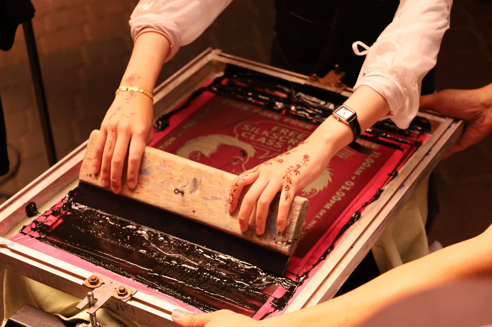
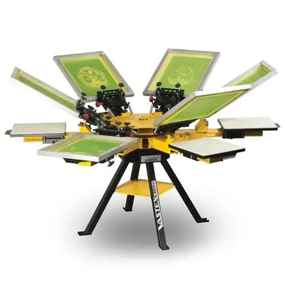

O que é a serigrafia?
A serigrafia transfere tinta através de uma tela de malha. Uma máscara, também chamada stencil, bloqueia as zonas que não devem imprimir. Um rodo empurra a tinta pelas zonas abertas, formando o desenho no artigo. Cada cor é normalmente preparada e aplicada separadamente, com alinhamento entre telas. ↗
Como funciona
Da arte à verificação, o processo combina preparação da tela, posicionamento e aplicação de tinta. O esquema resume a sequência; as condições concretas devem seguir o sistema de tinta e o artigo escolhidos. ↗
-
Preparar a arte
Definir dimensão e posição; separar as cores quando necessário.
-
Preparar a tela e o stencil
Escolher a malha e formar a máscara, deixando abertas as zonas do desenho.
-
Posicionar o artigo
Apoiar e fixar a peça para que a impressão mantenha a posição.
-
Passar a tinta com o rodo
Fazer a tinta atravessar as zonas abertas da tela.
-
Aplicar as outras cores
Repetir com as telas correspondentes, verificando o alinhamento.
-
Secar ou curar
Aplicar as condições adequadas à tinta e ao suporte.
-
Verificar o resultado
Conferir desenho, posição, cobertura e resistência acordada.
Equipamento
A tela mantém a malha esticada num quadro; o rodo faz passar a tinta e o suporte segura o artigo. Um carrossel organiza telas e postos de trabalho para têxteis. Equipamentos para objetos rígidos ou cilíndricos podem exigir outra fixação e movimento.

Materiais e produtos
T-shirts, sacos e outros artigos adequados são aplicações possíveis. A serigrafia pode permitir áreas maiores do que a tampografia, mas a área concreta depende da peça, da superfície acessível e do equipamento. ↗ Antes de escolher, indique a referência, a composição e a posição da marca. A designação do material, por si só, não confirma compatibilidade.
Cores e acabamentos
As cores são normalmente aplicadas em passagens próprias. O alinhamento entre elas chama-se registo: se uma tela ficar deslocada, surgem contornos ou espaços indesejados. Uma referência Pantone pode orientar a escolha, mas a aparência deve ser validada no suporte. A cor de fundo, a cobertura e o acabamento impedem prometer uma correspondência exata em todos os materiais. ↗
Preparação da arte
Envie o desenho original, as dimensões e a posição pretendidas. Confirme a grafia, as cores e a legibilidade à escala final. Uma imagem complexa pode precisar de adaptação; peça avaliação antes de eliminar detalhes ou alterar a identidade visual. Defina com a produção o ficheiro e a prova necessários para aprovar o resultado.
Condições a confirmar
A tinta, a malha e o stencil são escolhidos em conjunto. A superfície e a cura também influenciam aderência e resistência. A Marabu explica que auxiliares para tintas serigráficas UV podem afetar reatividade, aderência e outras propriedades: não são soluções universais. ↗ Confirme o uso previsto e os ensaios relevantes. Esta referência trata especificamente de tintas UV, não de todas as tintas têxteis.
Limitações
Costuras, relevos e zonas difíceis de apoiar podem reduzir a área imprimível. Muitas cores tornam o registo mais exigente; detalhes muito finos e imagens complexas precisam de avaliação da arte, da malha e do sistema. Não existe aqui um máximo universal de cores. Fotografias e degradés não devem ser excluídos de toda a técnica apenas porque um fornecedor limita o seu serviço.
Comparar alternativas
Compare a tampografia para pequenas áreas ou certas formas curvas. Nos têxteis, o bordado oferece uma imagem com textura de linha; DTF é outra possibilidade a avaliar. Para objetos adequados, consulte também impressão digital UV.
Têxteis, objetos rígidos e formas cilíndricas
Num têxtil, é importante manter a zona estendida e estável durante as passagens. Num objeto rígido, a fixação deve corresponder à sua forma. Na serigrafia circular, a peça cilíndrica roda durante a impressão; isso exige equipamento e posicionamento próprios. ↗ Não se deve aplicar automaticamente a uma garrafa o processo usado numa t-shirt.
Secagem, cura e revisão
Uma marca que parece seca não prova que atingiu a resistência necessária. O tratamento deve corresponder à tinta, ao suporte e às instruções do fabricante. Em têxteis, a verificação pode incluir ensaios adequados de lavagem; a aparência, por si só, não basta. ↗ Nos sistemas serigráficos UV, a cura depende de condições próprias da tinta. ↗ Combine previamente critérios de cor, posição, legibilidade e resistência com a produção.
Problemas frequentes e verificações
Um sinal pode ter várias causas. Estas verificações orientam a conversa com a produção.
Fontes e âmbito
As fontes descrevem processos, equipamentos ou contextos específicos. As explicações gerais e recomendações de validação não são especificações universais.